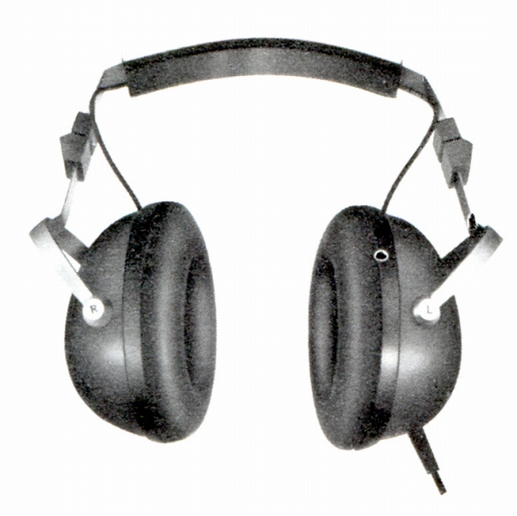
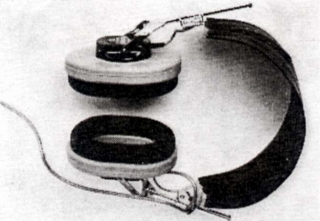

RDF-218

■価格 5,500円■型式 ダイナミック型■振動板 ■インピーダンス 8Ω■再生周波数帯域 20-20,000Hz■許容入力 1000mW■感度 104ｄB■コード 3mカールコード■重量 500ｇ■発売 〜1970年頃■販売終了 1972〜73年頃■備考

1972年の「ステレオ」誌にRDF-218として掲載されていた写真。RDF-207の誤認か？
フォステクスのインデックスへ